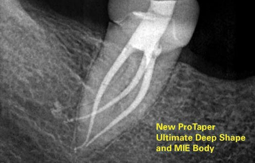
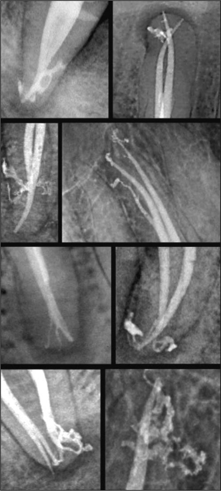

Матеріали Дентсплай Сірона · журнал «ДентАрт» 2024 №1
Формування всієї довжини кореневого каналу. Значення, обґрунтування та користь
DEEP SHAPE IN ENDODONTICS. SIGNIFICANCE, RATIONALE AND BENEFIT
Метою ендодонтичного лікування є запобігання ураженню ендодонтичного походження, яке називають апікальним періодонтитом, або його лікування. Участь бактерій у патогенезі ендодонтичних захворювань добре встановлена, і тому дуже важливо знищити ці патогени, використовуючи найвищий рівень розроблених на даний момент стандартів. Ця мета клінічно досягається шляхом формування, очищення та пломбування систем кореневих каналів. Ці три стовпи часто називають ендодонтичною тріадою або сучасним терміном – ендодонтична трифекта.
Роль формування кореневого каналу на всю довжину в ендодонтичному препаруванні
Grossman1 описав механічне очищення як найважливішу частину лікування кореневих каналів. Пізніше Bystrоm і Sundqvist2 змогли продемонструвати ефективність тільки механічних інструментів, без антисептичних іригаційних засобів і внутрішньоканальних пов'язок, для зменшення бактеріального навантаження на інфіковані системи кореневих каналів. Пізніше, у 1985 році, ті ж автори продемонстрували, що найкращих результатів можна досягти за допомогою комбінації механічна обробка/антисептична іригація NaOCl, тому часто вживається термін «хіміко-механічна підготовка».3
Біологічно обґрунтовано, що достатня механічна інструментальна обробка системи кореневих каналів є важливою для очищення всіх органічних матеріалів, включаючи предентин, і забезпечує можливість проникнення та обміну іригаційних розчинів у системі кореневих каналів. Єдиний спосіб створити достатній простір у верхівковій третині, не пошкоджуючи цю важливу й делікатну анатомічну ділянку, полягає в реалізації точного препарування та формування кореневого каналу на всю довжину, підтримуючи апікальну протяжність кореневого каналу настільки малою, наскільки це можливо, з достатньою конусністю за фізіологічним звуженням, щоб забезпечити глибоке розміщення іригаційної голки та перемішування іригаційного розчину.
Вражає той факт, що ще у 2001 році система формування ProTaper (Dentsply Sirona) надала стоматологам фінішні файли з прогресивною конусністю на 7 %, 8 % та 9 % у їхніх апікальних 3 мм препарування кореневого каналу для створення форми на всій довжині кореневого каналу, за чим слідують регресивні звуження до D16. Збільшений апікальний конус також забезпечує доступ до апікальної анатомії шляхом скорочення довжини бічних каналів, таким чином покращуючи доступ до їх очищення. Нещодавно випущена ендодонтична система ProTaper Ultimate (Dentsply Sirona) зберігає спадщину цієї унікальної та знакової функції з додаванням більш консервативного препарування коронки, щоб безкомпромісно відповідати сучасній концепції мінімально інвазивної ендодонтії (МІЕ) (рис. 1).

Рис. 1. Зображення моляра нижньої щелепи після лікування, яке ілюструє схему препарування нової системи ProTaper Ultimate Shaping System. Заслуговує на увагу присутність легендарної «глибокої форми» ProTaper, що забезпечує передбачувані, легкі й доступні 3D-очищення та обтурацію у поєднанні з мінімально інвазивною ендодонтією (MIE).
Ще в 1961 році Ingle7 запропонував стандартизовану техніку з випущеними тоді стандартизованими ендодонтичними інструментами з метою заповнення апікальної третини кореневого каналу спочатку пробкою із срібла, а пізніше гутаперчевим конусом, який точно відповідає діаметру останнього використаного інструменту на робочій довжині. Римери дедалі більшого розміру послідовно використовувалися на тій самій робочій довжині, щоб створити широке циліндричне препарування, яке охоплює весь поперечний переріз каналу, щоб механічно очистити його і в той же час забезпечити форму для утримання пломбувального матеріалу всередині відпрепарованого кореневого каналу. Ця методика, розроблена Університетом Вашингтона в Сіетлі, швидко була прийнята багатьма стоматологічними школами, включаючи скандинавські. Цей стандарт вважався еталонною технікою протягом багатьох років.
Після досліджень Kerekes і Tronstad6 у 1991 році rstavik та інші8 були першими, хто виступив за розширення в апікальній зоні для зменшення ендодонтичного джерела бактеріальної інфекції. Це було підтверджено у 1998 році Далтоном та співавторами,9 які довели, що кількість бактерій зменшується з більшими розмірами інструментів. За даними Card та ін.,10 препарування молярів до розміру 60 та іклів/премолярів до розміру 80 показало, що 81,5 % молярів і 100 % іклів/премолярів були вільні від бактерій наприкінці першого прийому.
Окрім зменшення кількості бактерій,11 кілька досліджень спостерігали позитивний вплив посиленого апікального препарування на чистоту апікальної третини,12 позитивний результат загоєння апікального періодонтиту,13 але також негативний вплив на здатність герметизації14 та післяопераційний біль.15,16 Основним недоліком більших апікальних препарувань є підвищений ризик несприятливих ятрогенних помилок, таких як виступи, транспортування каналів, перфорації, сходинки та переломи інструментів,17,18 особливо у вузьких і викривлених каналах. Огляд літератури хоча й підтримує більші апікальні розміри, однак застерігає від процедурних помилок і просить збалансувати ступінь розширення відповідно до анатомії каналу.19
Щоб подолати ці невдачі, Weine та інші20 пропонували телескопічне препарування з розширенням апікальної частини кореневого каналу на 3 розміри більше першого файлу, який пройшов на робочій довжині. Це твердження було клінічно випадковим і дискусійним. У 1974 році Schilder21 запропонував інноваційну техніку ручного формування, засновану на анатомії кожного окремого каналу. Використовуючи рекапітуляції за допомогою розширювачів та огинаючий рух, можна було досягти конусних препарувань, уточнених в апікальній зоні, шляхом створення Deep Shape (глибокої форми). Deep Shape було клінічно підтверджено, коли будь-який вимірювальний файл щільно прилягав по довжині, а кожен наступний більший К-файл рівномірно виступав за межі каналу на 0,5–1,0 мм, залежно від анатомії.
Роль Deep Shape (глибокої форми) у 3-вимірному ендодонтичному очищенні
Глибока форма забезпечила чудову механічну обробку апікальної третини одночасно з покращенням очищення апікальної третини завдяки глибокому введенню іригаційної голки та створенню рефлюксного простору, що поліпшує обмін іригантів, а також створенню воронкоподібної форми для обмеженого 3D заповнення (рис. 2).22
Після формування in vivo 60 кореневих каналів передніх і бокових зубів та використання рентгеноконтрастного розчину для іригації Yana23 продемонстрував у своїй магістерській роботі, що проникнення та заміна іригаційного розчину та напруги зсуву кінчика голки апікально, одночасно знижуючи ризик екструзії іригаційного розчину. Було продемонстровано, що конусність препарування 30/09 з ProTaper F3 була еквівалентною 60/02.

Рис. 2. Цей колаж із 8-ми зображень демонструє значення клінічних результатів «Deep Shape» LOOK при ендодонтичному препаруванні: рентгенологічні підтвердження тривимірного очищення та пломбування. Його назвали «Процвітання заповнення». Визначення емпіричного моменту в ендодонтії – тривожний момент, відомий усім стоматологам, коли вони чекають, доки з'явиться рентгенологічне зображення заповнення. Коли з'являється зображення і анатомія кореневого каналу видимо заповнена, відразу виникає відчуття радості, задоволення та клінічного тріумфу. Це відчуття пробуджує в нас дитину і дозволяє нам бути веселими та продуктивними в ендодонтичному лікуванні, знаючи, що ми можемо бути впевненими, стабільними і контролювати результати ендодонтичного лікування.
Результати дослідження Boutsioukis та ін.31 з використанням нестаціонарної обчислювальної динаміки рідини підкреслили вплив збільшеної конусності для покращення заміни іригаційного розчину та напруги зсуву кінчика голки апікально, одночасно знижуючи ризик екструзії іригаційного розчину. Було продемонстровано, що конусність препарування 30/09 з ProTaper F3 була еквівалентною 60/02.
Роль глибокої форми в 3D ендодонтичному пломбуванні
Deep Shape також є важливим компонентом для пломбування системи кореневих каналів після формування. Правильна глибока форма забезпечує опорну форму для утримання пломбувального матеріалу всередині кореневого каналу. На початку 1990-х років Yared i Bou Dagher14,32 продемонстрували у двох дослідженнях переваги збереження малого апікального розміру порівняно з великим для отримання герметичного ущільнення системи кореневого каналу та уникнення екструзії пломбувальних матеріалів. Глибока форма є обов'язковою для методів розм'якшеної гутаперчі, таких як тепле вертикальне ущільнення та обтурація на основі носія, щоб забезпечити захоплення апікальної анатомії, що є важливою передумовою для передбачувано успішної ендодонтії. Мікрокомп'ютерна томографія, яка вивчала вплив апікальної конусності на якість пломбування кореневих каналів, виявила, що формування апікальної третини (останніх 3 мм) кореневих каналів до 8 % конусності є необхідним для досягнення кращої герметизаційної здатності, а отже, довгострокового успіху при обтурації кореневих каналів.34
Нещодавня доступність біосилікатних силерів оновила виконання техніки одним конусом. Але на відміну від старої, стандартизованої методики,7 усі поточні препарування каналів виконуються конусними інструментами. Отже, щоб отримати тривимірне заповнення, ідеально відповідний гутаперчевий конус є обов'язковим.
Germain та інші35 оцінили вплив конусності кореневого каналу на апікальну адаптивність силерів, якими пломбують кореневі канали, та відповідність конусності GP, що використовуються в техніці одного конуса, шляхом вимірювання об'єму порожнини. У цьому дослідженні 6 % конусне препарування показало значно менше пустот порівняно з 4 % конусним препаруванням. У конфомальній мікроскопічній оцінці Eid та інші36 оцінили вплив вертикальної конденсації (WWC) на здатність герметизації силерів на основі силікату кальцію у порівнянні з технікою одного конуса (SCT). WWC забезпечила краще проникнення на 1 мм і 5 мм у дентинні канальці, ніж SCT. Після формування каналу за допомогою ProTaper Ultimate, незалежно від використовуваної техніки наповнення, потрійна фіксація нових конусів Dentsply Sirona GP забезпечує краще ущільнення на більшій поверхні стінок препарування.
Підсумовуючи, можемо констатувати, що доступних достовірних даних поки що недостатньо для вирішення дилеми між розміром верхівки та конусністю після формування. Існує дуже мало рандомізованих контрольованих клінічних досліджень, і вони оцінюють головним чином вплив збільшення апікального розміру на результати загоєння апікального періодонтиту15 та післяопераційного болю.16,37 У вересні 2021 року було опубліковане єдине перспективне рандомізоване клінічне дослідження CONSORT, яке вперше оцінює вплив різних розмірів препарування у поєднанні з різними апікальними звуженнями на результат первинного ендодонтичного лікування.38 На основі ретельного огляду літератури та у відповідності із суворим протоколом, результати цього дослідження засвідчили, що мінімальна апікальна підготовка, потрібна для адекватної дезінфекції каналів, становила 25/0,06 або 30/0,04, що відповідає попереднім дослідженням.25-27
Висновки
Нова система формування ProTaper Ultimate із меншим діапазоном інструментів спрощує процедуру формування та поєднує мінімально інвазивне конусне препарування з передбачувано успішними рисами Рго Taper Deep Shape, 3D очищення i 3D заповнення. Оптимізація важливих елементів дизайну, унікальна обробка та спеціальна металургія дозволяють клініцистові відчути безперебійний робочий процес за допомогою переходів між слайдером, ендоінструментом для формування кореневого каналу та фінішним інструментом.
Історія успіху ProTaper пропонує абсолютно новий стандарт ефективності не лише для стоматолога, але й для нашого найважливішого споживача – пацієнта.
Переклад – Анна і Юлія Бодаква
Література
- Grossman L. Endodontic Practice. Lea & Febiger; 1970.
- Bystrom A., Sundqvist G. Bacteriologic evaluation of the efficacy of mechanical root canal instrumentation in endodontic therapy. Scand J Dent Res. 1981;89(4):321–8. doi:10.1111/j.1600-0722.1981.tb01689.x
- Bystrom A., Sundqvist G. The antibacterial action of sodium hypochlorite and EDTA in 60 cases of endodontic therapy. Int Endod J. 1985;18(1):35-40. doi:10.1111/j.1365-2591.1985.tb00416.x
- Zehnder M. Root canal irrigants. J Endod. 2006;32(5):389–98. doi:10.1016/j.joen.2005.09.014
- Arnold M., Ricucci D., Siqueira J. F. Jr. Infection in a complex network of apical ramifications as the cause of persistent apical periodontitis: a case report. J Endod. 2013;39(9):1179–84. doi:10.1016/j.joen.2013.04.036
- Kerekes K., Tronstad L. Long-term results of endodontic treatment performed with a standardized technique. J Endod. 1979;5(3):83-90. doi:10.1016/S0099-2399(79)80154-5
- Ingle J. I. A standardized endodontic technique utilizing newly designed instruments and filling materials. Oral Surg Oral Med Oral Pathol. 1961;14:83–91. doi:10.1016/0030-4220(61)90477-7
- rstavik D., Kerekes K., Molven O. Effects of extensive apical reaming and calcium hydroxide dressing on bacterial infection during treatment of apical periodontitis: a pilot study. Int Endod J. 1991;24(1):1-7. doi:10.1111/j.1365-2591.1991.tb00863.x
- Dalton B. C., rstavik D., Phillips C., et al. Bacterial reduction with nickel-titanium rotary instrumentation. J Endod. 1998;24(11):763–7. doi:10.1016/S0099-2399(98)80170-2
- Card S. J., Sigurdsson A., rstavik D., et al. The effectiveness of increased apical enlargement in reducing intracanal bacteria. J Endod. 2002;28(11):779–83. doi:10.1097/00004770-200211000-00008
- Rollison S., Barnett F., Stevens R. H. Efficacy of bacterial removal from instrumented root canals in vitro related to instrumentation technique and size. Oral Surg Oral Med Oral Pathol Oral Radiol Endod. 2002;94(3):366–71. doi:10.1067/moe.2002.126164
- Fornari V. J., Silva-Sousa Y. T., Vanni J. R., et al. Histological evaluation of the effectiveness of increased apical enlargement for cleaning the apical third of curved canals. Int Endod J. 2010;43(11):988–94. doi:10.1111/j.1365-2591.2010.01724.x
- Souza R. A., Dantas J. C., Brandгo P. M., et al. Apical third enlargement of the root canal and its relationship with the repair of periapical lesions. Eur J Dent. 2012;6(4):385–8.
- Yared G. M., Bou Dagher F. E. Apical enlargement: influence on the sealing ability of the vertical compaction technique. J Endod. 1994;20(7):313–4. doi:10.1016/S0099-2399(06)80091-9
- Saini H. R., Sangwan P., Sangwan A. Pain following foraminal enlargement in mandibular molars with necrosis and apical periodontitis: A randomized controlled trial. Int Endod J. 2016;49(12):1116–23. doi:10.1111/iej.12583
- De Freitas Portela F. S. M., De Martin A. S., Pelegrine R. A., et al. Effect of Foraminal Enlargement on Postoperative Pain in Necrotic Single-Rooted Teeth: A Randomized Clinical Trial. J Endod. 2021;47(7):1046–51. doi:10.1016/j.joen.2021.04.008
- Ruddle C. J. Nonsurgical endodontic retreatment. J Calif Dent Assoc. 1997;25(11):769–75, 777, 779–86 passim.
- Buchanan L. S. Shaping root canals, Part VI: GT File technique in abruptly curved canals. Dent Today. 2000;19(2):66-71, 166
- Baugh D., Wallace J. The role of apical instrumentation in root canal treatment: a review of the literature. J Endod. 2005;31(5):333–40. doi:10.1097/01.don.0000145422.94578.e6
- Weine F. S., Healey H. J., Gerstein H., et al. Pre-curved files and incremental instrumentation for root canal enlargement. J Can Dent Assoc (Tor). 1970;36(4):155–7.
- Schilder H. Cleaning and shaping the root canal. Dent Clin North Am. 1974;18(2):269–96.
- Machtou P. L'irrigation en endodontie [Irrigation in endodontics]. Actual Odontostomatol (Paris). 1980;34(131):387–94. French.
- Yana Y. An in vivo comparative study of the penetration of sodium hypochlorite in root canal systems during cleaning and shaping procedures using the B. U. technique and the sonic instrumentation [Master's thesis]. Boston: Boston University; 1989.
- De Chevigny C., Dao T. T., Basrani B. R., et al. Treatment outcome in endodontics: the Toronto study—phase 4: initial treatment. J Endod. 2008;34(3):258–63.
- Coldero L. G., McHugh S., MacKenzie D., et al. Reduction in intra canal bacteria during root canal preparation with and without apical enlargement. Int Endod J. 2002;35(5):437–46. doi:10.1046/j.1365-2591.2002.00496.x
- Albrecht L. J., Baumgartner J. C., Marshall J. G. Evaluation of apical debris removal using various sizes and tapers of ProFile GT files. J Endod. 2004;30(6):425–8. doi:10.1097/00004770-200406000-00012
- Khademi A., Yazdizadeh M., Feizianfard M. Determination of the minimum instrumentation size for penetration of irrigants to the apical third of root canal systems. J Endod. 2006;32(5):417–20. doi:10.1016/j.joen.2005.11.008
- Caron G., Nham K., Bronnec F., et al. Effectiveness of different final irrigant activation protocols on smear layer removal in curved canals. J Endod. 2010;36(8):1361–6. doi:10.1016/j.joen.2010.03.037
- Bronnec F., Bouillaguet S., Machtou P. Ex vivo assessment of irrigant penetration and renewal during the cleaning and shaping of root canals: a digital subtraction radiographic study. Int Endod J. 2010;43(4):275–82. doi:10.1111/j.1365-2591.2009.01677.x
- Bronnec F., Bouillaguet S., Machtou P. Ex vivo assessment of irrigant penetration and renewal during the final irrigation regimen. Int Endod J. 2010;43(8):663-72. doi:10.1111/j.1365-2591.2010.01723.x
- Boutsioukis C., Gogos C., Verhaagen B., et al. The effect of root canal taper on the irrigant flow: evaluation using an unsteady Computational Fluid Dynamics model. Int Endod J. 2010;43(10):909–16. doi:10.1111/j.1365-2591.2010.01767.x
- Yared G. M., Bou Dagher F. E. Apical enlargement: influence on overextensions during in vitro vertical compaction. J Endod. 1994;20(6):269–71. doi:10.1016/s0099-2399(06)80813-7
- West J. D. The relationship between the three-dimensional endodontic seal and Endodontic failures [Master's thesis]. Boston: Boston University; 1975.
- Zogheib C., Naaman A., Medioni E., et al. Influence of apical taper on the quality of thermoplasticized root fillings assessed by micro-computed tomography. Clin Oral Investig. 2012;16(5):1493–8. doi:10.1007/s00784-011-0638-4
- Germain S., Meetu K., Issam K., et al. Impact of the root canal taper on the apical adaptability of sealers used in a single-cone technique: a micro-computed tomography study. J Contemp Dent Pract. 2018;19(7):808–15.
- Eid D., Medioni E., De-Deus G., et al. Impact of warm vertical compaction on the sealing ability of calcium silicate-based sealers: a confocal microscopic evaluation. Materials (Basel). 2021;14(2):372. doi:10.3390/ma14020372
- Silva E. J., Menaged K., Ajuz N., et al. Postoperative pain after foraminal enlargement in anterior teeth with necrosis and apical periodontitis: a prospective and randomized clinical trial. J Endod. 2013;39(2):173–6. doi:10.1016/j.joen.2012.11.013
- Fatima S., Kumar A., Andrabi S. M. U. N., et al. Effect of apical third enlargement to different preparation sizes and tapers on post operative pain and outcome of primary endodontic treatment: a prospective randomized clinical trial. J Endod. 2021;47(9):1345–51. doi:10.1016/j.joen.2021.05.010